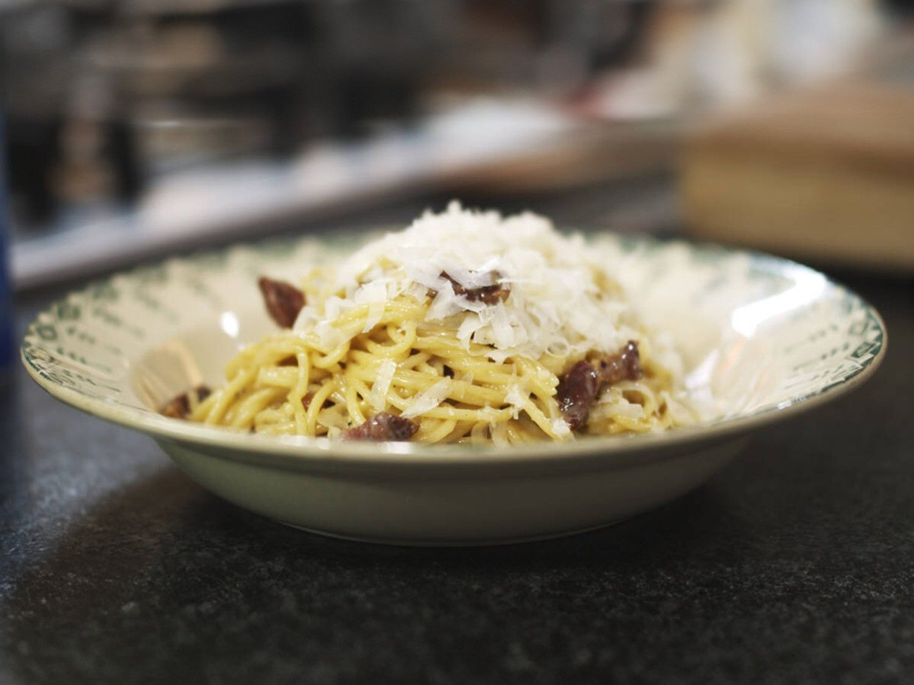

Spaghetti Carbonara
Home

Description
Luciano Pavarotti had veel noten op z'n zang, maar je kon de man helemaal stil krijgen door een flink bord spaghetti alla carbonara voor z'n neus te zetten. Veel te vaak wordt deze klassieker met room bereid, maar da's een doodzonde in de ogen van een echte Italiaan. Reken maar dat het stil zal zijn aan tafel!
Ingredients
- Spahetti
- Zout
- Olijfolie
- Boter
- Gerookt spek
- Eieren
- Parmezaanse kaas
- Peper
Stappen
- Zet een ruime kookpot met water op het vuur en breng het aan de kook. Strooi een flinke snuif zout in het water.
- Zet een braadpan op het vuur en verhit hierin een klontje boter en een scheutje olijfolie.
- Snij het gerookte spek in blokjes en bak het in de hete pan. Laat het spek krokant bakken, maar roer de stukjes vlees wel regelmatig even om.
- Neem een mengschaal en breek er de eieren in. Klop ze los met een garde en rasp de Parmezaanse kaas erbij. Roer de kaas door het eiermengsel.
- Zodra het water kookt, gaar je er de spaghetti in. Kook de pasta al dente, net niet beetgaar.
- Giet het kookvocht af en doe de spaghetti in een ruime mengschaal.
- Schenk het mengsel van eieren en Parmezaanse kaas over de warme pasta en roer alles voorzichtig om. Hierdoor garen de eieren en smelt de kaas.
- Strooi ook de krokante spekjes erbij en kruid de pasta met voldoende peper van de molen.
- Roer een laatste keer en serveer de pasta alla carbonara met nog wat extra geraspte Parmezaanse kaas.